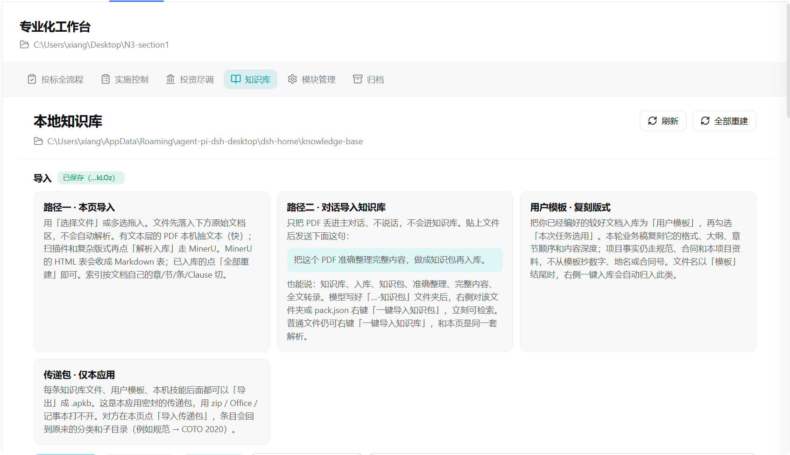
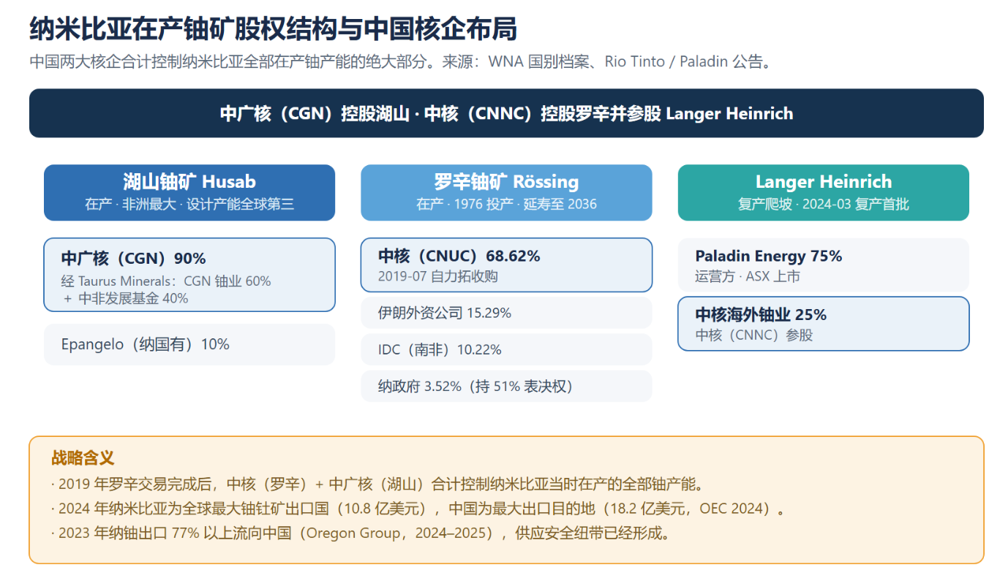
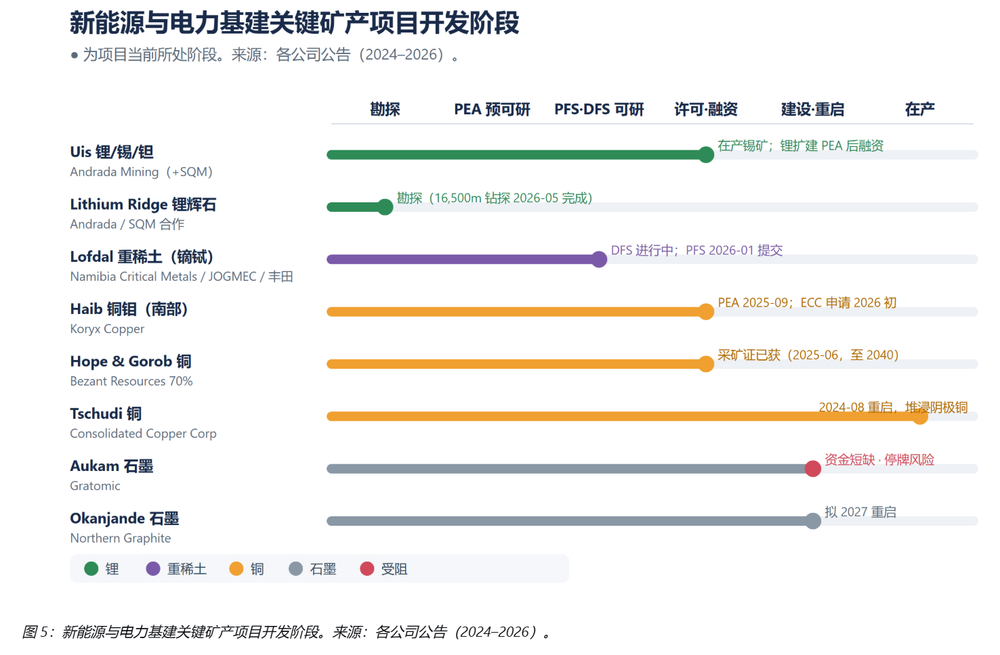
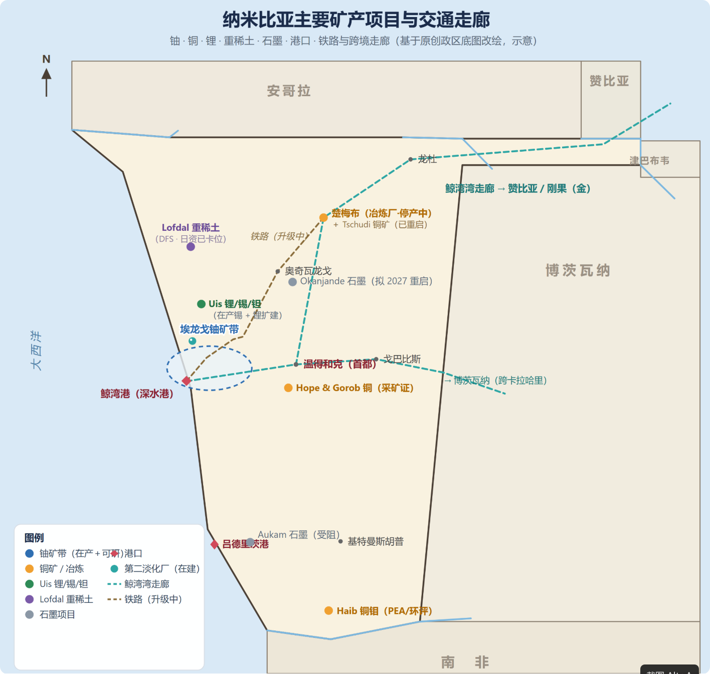

效果表现：来自真实项目作业，不是演示摆拍 REAL OUTPUTS

知识库工作台规范、FIDIC 条款、特别条款修订入库；右侧 BOQ 组价成果树逐条落盘，全程可追溯。

投资尽调报告纳米比亚在产铀矿股权结构与中资布局分析，咨询级版式一次成稿。

市场尽调图表新能源与电力基建关键矿产项目开发阶段全景，来源逐条标注。

矿区交通走廊地图矿产项目与港口、铁路、跨境走廊的原创改绘示意图。
施工过程仿真：EB Cloete 立交钢拱吊装
一次任务直接生成可交互三维仿真：110m 跨径钢拱分节吊装动画、受力数据可视化（应力热力图，经 MS FEM 校验）、参数与图纸对照、完整计算书——幻觉围栏 + 长程不断档，让施工过程仿真、市场尽调这类巨量数据处理完成质的飞跃。
应用价值：中标只是开始
投标阶段沉淀的全部详尽基础资料（范围界定、单价推导、资源汇总、施工策划）直接服务实施阶段：成本策划有据可依，落地即有据可查——一次投入，两次产出，为企业沉淀可复用的作业资产。
落地与推广：从信息化到智能化的跃迁，可以从一台服务器开始 DEPLOYMENT
推广路线 ROADMAP
进行中
PDF 图纸工程量核算
直接读 PDF 图纸，核算工程量并与 BOQ 对照。
方向
企业私有化部署
服务端 Web 多用户，微信 / 飞书 / 钉钉 / QQ 接入，OA 流程插件。
规划中
建筑概念图 / 3D 建模
发挥内核多模态特点，从策划走向概念表达与参数化建模。
规划中
BIM 信息化
模型与工程数据贯通，服务全生命周期。
推广价值：系统已在真实海外项目作业中验证——把骨干经验沉淀为可检索、可复用、可审计的企业作业资产；约 3 万元的一次性投入即可起步，数据不出公司内网，普通办公电脑也能跑。